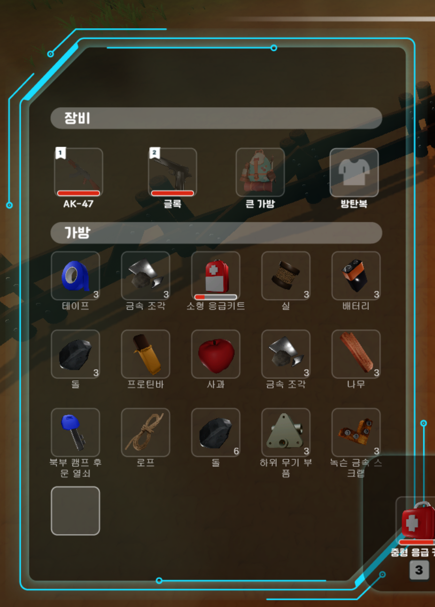

철과 묵보이는 장면과
그 뒤의 시스템
그 뒤의 시스템
SmartCity VR · 멀티플레이
같은 문인데,
서로 다르게 보였다.
열차가 도착한 뒤 접속한 사람에게만 문이 닫혀 보였습니다.
 수정 후 두 번째 클라이언트 화면
수정 후 두 번째 클라이언트 화면문제들어온 시점에 따라
들어온 시점에 따라
상태가 달랐습니다.
문이 열렸다는 일회성 신호만 보내고 있었습니다.
해결현재 문 상태를
현재 문 상태를
방에 저장했습니다.
늦게 들어온 사람도 현재 상태를 읽도록 바꿨습니다.

다른 장면도 살펴보세요.


게임 화면에는 각 팀원의 작업이 포함되어 있으며, 링크된 상세 페이지에서 담당 범위를 확인할 수 있습니다.